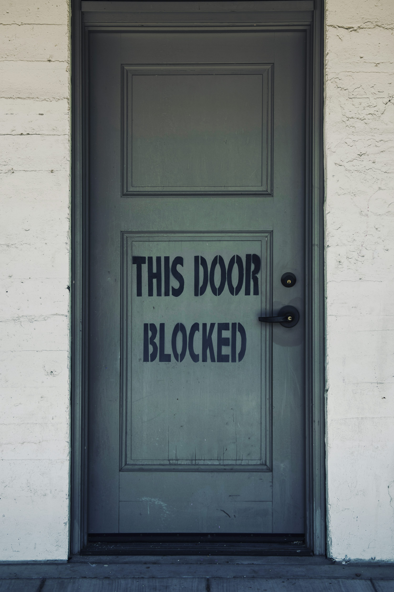
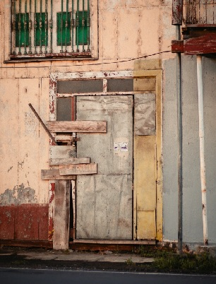
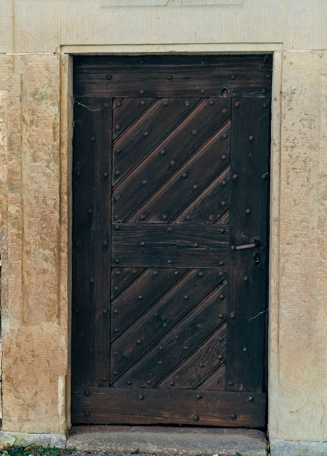
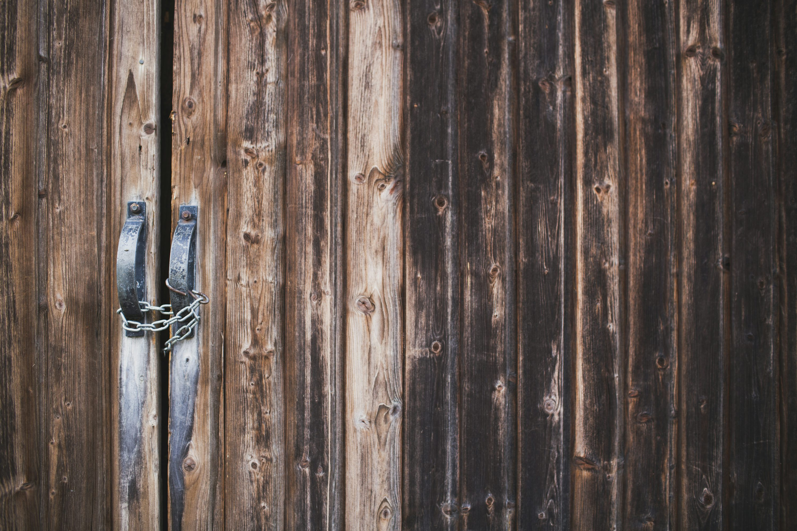
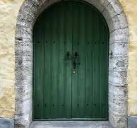

Open the Door
Could you let me in
I say
could you let me
inside
for a moment?
do you hear me?
only a moment
to get my breath
rough out here
you know that
has to be
of course
but it's hard
though right
no doubt there
deathly hard
you're good to listen
some won't
the best will
out here too
some are better
though spavined
unworthy
agreed
but better
even useful
not essential
to you
who need
no-one
but not useless
completely
at times
though replete
as you are
full up
with competence
opening a crack
to my thin line
hardly there
inessential self
to slide in
is not even
worth a mention
or a why not
I know how
to stand
a broomstick
in no space
against the wall
or to lie flat
anywhere
in the dirt
bare earth
no trouble
I'll sleep
or close my eyes
not bedding down
moving when you say
awake listening
for your orders
mind my business.
bear no tales
never talk of me
once inside
not a word
unless you ask
not nosey you
but the quiet
might bother you
I've plenty to tell
without running off
at the mouth
my stories are short
point made period
up to you
want a babble?
I lead the chorus
spiel or song
nothing loud
everyone has neighbours
they shut you up?
never no chance
you're your own man
that's for sure
but with backup
I'm there
insurance
not needed
you could handle them
on your own
easy
keep them in their place
hard love muscular
no sentiment mush
they understand
enjoy it
you're on top
in charge
bullying never
but it's you or them
from a stylish gent
a quick word
sharp short
hint of smile
gives them an exit
losers they're not
but they lose
it's a game I know
many tricks to share
shortcuts uppercuts
they're flattened
you let up
no brute
but your back
watch your back
sneaks they are
snakes
indecent
never mind
I'm there
wordless
quick
take them out
backup
do without?
absolutely
you could
but why?
you deserve
extra care
precious
for us all
bend your ear?
never
I will not
give advice
never ever
save when asked
always ready
other approach
if needed
variety on tap
can serve
two more eyes
strictly subordinate
near invisible
nothing
cemetery silent
not morbid though
another perspective
respectful suggestion
might help can help
even in a superior setup
smooth running
without backup
like your door
this door
you handle it
more than alright
but other things
serious things
you could do
with a stand in
a simple flunky
free you
for other things
greater things
to make your mark
higher up
beyond here and now
greatness glory
get me wrong
don't
front door vigilance
comes first
fundamental
keystone
but a flunky can
on your instruction
of course
open it
or mostly not
only special cases
rare ones
worthy ones
once in a blue moon
maybe once ever
on your okay
he'd open
to one stranger's plea
flunky's been around
you need the right man
no pushover
he knows the night
what's out there
basket cases
leap at your throat
silver tongued phonies
they whine
they tear up
he doesn't yield
recites your responsibilities
makes them his
I'm saying what you know
of course
there are flunkies
and flunkies
one or two of them
proud to say of us
maybe just one
an extended right arm
thinking limb
thoughts for you
not for me
we've stopped
thinking
beyond our station
you do that
so without closer look
wasting your time
a problem arises
bound to
you are resting
to return stronger
we need you strong
always stronger
beg you to rest
to be strongest
till perchance
a chance in a million
because no house
securer than yours
you've seen to that
unheralded always
brilliant bright
now quick thinking
can save your home
our home
flunkies are trained
to keep mouths shut
on pain of losing
flunky status
here the exception
breaks the rule
respectfully
your average flunky
trained too well
wouldn't shout fire
as the flames lick
up stairs to the attic
not call the plumber
when the toilet blocked
not touch the doorknob
you told him never to
so the resuscitation team
can't get in
special events need
that special flunky
he alone
can steady the boat
avoid shipwreck
call men on deck
save the captain's life
with respect
your life
and then
fall back with the crew
of non-thinkers
non-talkers claiming
no specialness
grabbing no authority
if you permit me
a look in you mind
just this once never again
you wonder how to find
this windfall of destiny
this dare I say?
with excess maybe
this prince of flunkies
where
where to find him?
closer than you think
the place to seek him
right here
where your honour stands
outside the front door
no better place
to weigh up flunkies
I know I know
weary the peephole
brutish faces
one after another
pretended humility
offering praise
kowtowing
insincere to the marrow
not worth
a no-thanks
your time wasted
but necessary
compensated at last
when yes comes
to your lips
come in you say
the doorknob turns
I prepare to step through
can you trust me?
I think so
your presence commands
irresistible your orders
this blessed flunky
couldn't disobey
if unimaginably
he'd want to
no could do
your divine flare
right choice
master's touch
so let me in
inside
open the door
photo by Thom Milkovic on Unsplash

photo by Tim Mossholder on Unsplash

photo by Ricardo Morales on Unsplash

photo by Masaaki Komori on Unsplash

photo by Markus Winkler on Unsplash

photo by Martin Adams on Unsplash

photo by Markus Spiske on Unsplash

photo by Karson on Unsplash
photo by David Clode on Unsplash

photo by Chris Barbalis on Unsplash

photo by Annie Sprat on Unsplash

photo by Ben Ostrower on Unsplash